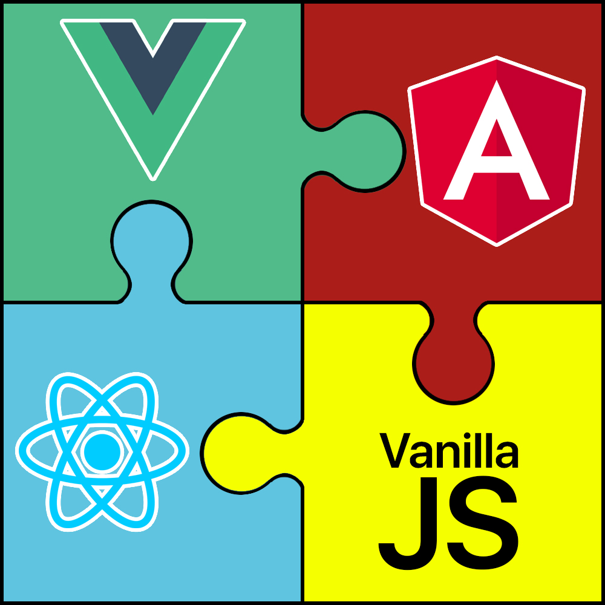
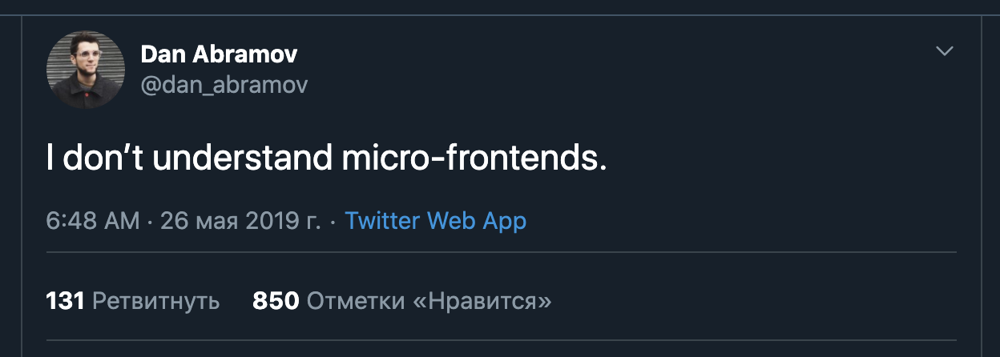
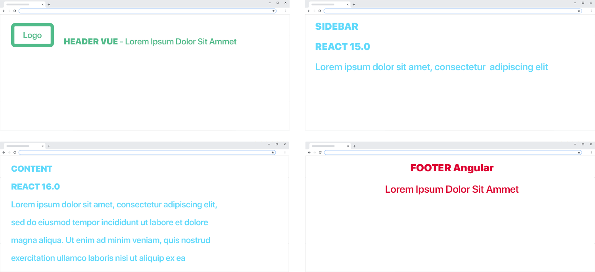
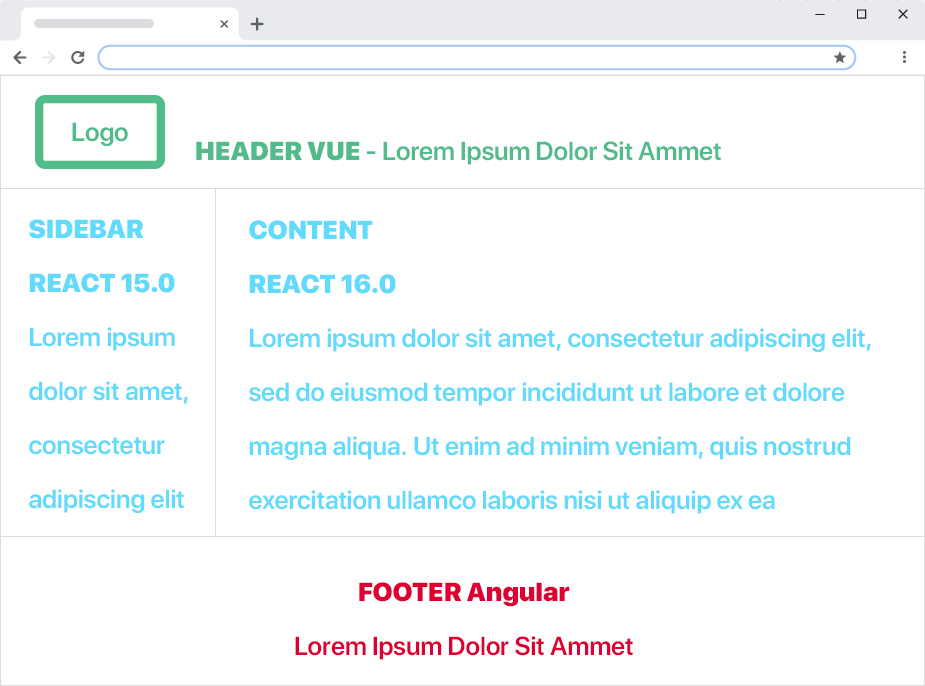

ILC(Isomorphic Layout Composer) - complete solution for Micro Frontends composition into SPA with SSR support
Micro-Frontends, the future is now.
Isomorphic Layout Composer

Володимир Макуха
~10 років досвіду
KharkivCSS організатор
T-shaped Conference організатор
RnD Frontend Engineer в Namecheap

Про що будемо говорити
Microservices
Монолітний фронтенд
Micro-Frontends
ILC(Isomorphic Layout Composer)
Microservices
Microservices Wiki
Microservices is a software development technique —a variant of the service-oriented architecture (SOA)
structural style— that arranges an application as a collection of loosely coupled services.
https://en.wikipedia.org/wiki/Microservices
Microservices architecture
Легкі в обслуговуванні і тестуванні
Слабо пов'язані між собою
Незалежно розгортаються
Належать маленьким командам
Давайте уявимо їх на фронтенді

Вжух

Монолітний фронтенд
Монолітний фронтенд
Переваги
Все в одному місці
Легко деплоїтися
Легко розвернути локально проект
Легко писати end-to-end тести
Недоліки
Повільні цикли розробки, тому релізи відбуваються рідко і важко
Редеплой всього проекту при найменшому оновленні
Сайд-ефекти - перед деплоєм потрібно тестувати весь проект
An architectural style where independently deliverable frontend applications are composed into a greater whole.
Martin Fowler
Я, прийшов розпровідати бізнесу, що нам потрібно додати ще одну "нову-модну-молодьожну" технологію/фреймворк в проект
Я додав новий фреймворк
Завдяки Micro-Frontends:
Релізи будуть частішими і не такими болючими
Люди/команди будуть менше пов'язані між собою (незалежна розробка, деплой, автотести, мануальні тести і т. д.)
Два великі пулреквеста ідуть в мастер
Завдяки Micro-Frontends:
Релізи будуть частішими і не такими болючими
Люди/команди будуть менше пов'язані між собою (незалежна розробка, деплой, автотести, мануальні тести і т. д.)
Буде можливість різним командам використовувати різні фреймворки і оновлювати версії
Буде простіше і бистріше вносити правки, шукати баги і ботлнеки
Як наслідок - більш стабільний продукт, економія часу і фінансів.
Деплой Моноліта VS Мікросервісів
Деплой моноліта, в порівнянні з мікросервісами - це поїзд з великої кількості комітів, який ми чекаємо дуже довго, доки всі люди/команди закінчать свої таски і деплоїмо, наприклад, раз у 2 місяці і...